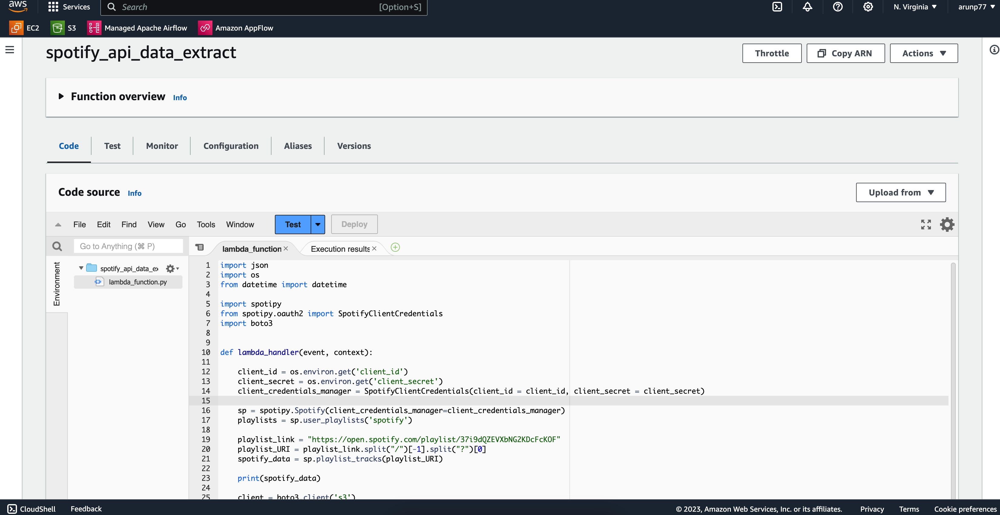

Building an Automated Data Pipeline (ETL) for Spotify's Globally Famous Songs Dataset on AWS
Introduction
Music is a universal language that transcends borders and cultures. Spotify one of the world's leading music streaming platforms, offers a treasure trove of data on the most globally famous songs. Analyzing this data can provide valuable insights into music trends, artist popularity, and more. In this project, we'll walk you through building an automated data pipeline on Amazon Web Services (AWS) to extract, transform, and load (ETL) data from Spotify, empowering you to explore and analyze globally famous songs.
Prerequisites
Before diving into the project, you'll need the following prerequisites:
- An AWS account with the necessary permissions to create and manage services.
- Basic knowledge of AWS services like S3, Lambda, Glue, and Athena.
- Python programming skills.
- Spotify API access.
Project overview
This project is an end-to-end ETL (Extract, Transform, Load) pipeline designed to automate the extraction of data from a Spotify playlist and process it using various AWS services. The goal is to showcase proficiency in data engineering and AWS, with a focus on data extraction, transformation, and automated processing.
This project consists of the following key steps:
- Data Extraction: I'll use AWS Lambda functions to interact with the Spotify API, retrieve data on globally famous songs at spotify, and store it in an Amazon S3 bucket.
- Data Transformation: Next, I'll develop Lambda functions to transform the raw Spotify data into structured datasets. This involves parsing JSON responses, creating dataframes, and applying data cleaning operations.
- Data Loading: The transformed data will be loaded back into the S3 bucket, ready for analysis.
- Automated Processing: To keep the data up-to-date, I'll implement automated processes to periodically fetch new data from Spotify and update the datasets by creating Amazon cloudwatch and trigger. To keep the music data current, I have implemented automated processes that actively fetch new data from Spotify and dynamically update the datasets. Whenever a new dataset is added to the S3 bucket, an AWS S3 trigger is automatically activated to initiate the data transformation process. Once the data is transformed, it is then loaded into a specific order or destination.
- Data Analysis: With the data ready, you can explore music trends, artist popularity, genre distribution, and more.
Project Architecture

Project Setup
Spotify Playlist and API:
- Created a Spotify API account.
- Obtain API keys and client credentials ('client_id' and 'client_secret' will be needed while extracting the data from Spotify).
- Located the target Spotify playlist at Spotify Playlist Link.
AWS Resources:
- Create an Amazon S3 bucket to store the data (you can follow the step by step guide provided at official AWS documnetation page)
- Configure folder structures within the S3 bucket for raw and transformed data.
- Set up necessary Lambda functions for data extraction and transformation.
- In the project, I created follwoing folders in s3 bucket on AWS cloud:
- Set up an Amazon S3 bucket named "spotify-etl-project-arun."
- This bucket contains all the data files obtained from the spotify API.
- raw_data/
- processed/
- to_processed/
- transformed_data/
- album_data/
- artist_data/
- songs_data/
Amazon S3 Bucket:
Folder Structure:
Within the S3 bucket, established a structured folder hierarchy:
Key Components
Data Extraction (AWS Lambda - "spotify_api_data_extract")
In this Lambda function, we extract data from the Spotify API and save it in the raw data folder within the S3 bucket. The function uses the Spotify API credentials to access song information.
- Created an AWS Lambda function named "spotify_api_data_extract". Here is the lambda function:
import json, os, spotify, boto3
from datetime import datetime
from spotipy.oauth2 import SpotifyClientCredentials
def lambda_handler(event, context):
client_id = os.environ.get('client_id')
client_secret = os.environ.get('client_secret')
client_credentials_manager = SpotifyClientCredentials(client_id = client_id, client_secret = client_secret)
sp = spotipy.Spotify(client_credentials_manager=client_credentials_manager)
playlists = sp.user_playlists('spotify')
playlist_link = "https://open.spotify.com/playlist/37i9dQZEVXbNG2KDcFcKOF"
playlist_URI = playlist_link.split("/")[-1].split("?")[0]
spotify_data = sp.playlist_tracks(playlist_URI)
client = boto3.client('s3')
filename = "spotify_raw_" +str(datetime.now()) + ".json"
client.put_object(
Bucket = "spotify-etl-project-arun",
Key = "raw_data/to_processed/" + filename,
Body = json.dumps(spotify_data)
)
json: Used for working with JSON data,
os: Used for accessing environment variables,
spotify: The spotipy library, which is used for working with the Spotify Web API,
boto3: The AWS SDK for Python, used for interacting with AWS services.
datetime: Used for generating a timestamp.
lambda_handler: function is the entry point for the Lambda function which takes arguments: 'event' and 'context'. This function retrieve spotify API credentials from environment variables 'client_id' and 'client_secret' via 'SpotifyClientCredentials' function. The 'client_id' and 'client_secret' are necessary for authenticating with the SpotifyWeb API and 'SpotifyClientCredentials' is used an access token for the Spotify API.
sp: This object is used to interact witth the Spotify API, and created with the 'client_credentials_manager'
boto3: The 'boto3' is used to create to interact with AWS s3 bucket,
- The 'client.put_object' function of the lambda function is used to dump extracted data from Spotify playlist to the 'raw_data/to_processed' directory of the AWS s3 bucket (in my case "spotify-etl-project-arun" bucket). Here extracted data is first converted to JSON style (unstructured format) and then uploaded to the specified location
Data Transformation and Loading (AWS Lambda - "spotify_transformation_load_function")
This Lambda function is responsible for the transformation of raw data. It parses JSON responses, converts them into dataframes, and applies data cleaning operations such as removing duplicates and converting data types.

- Developed an AWS Lambda function named spotify_transformation_load_function". Here is the lambda function which:
import json, boto3,
import pandas as pd
from datetime import datetime
from io import StringIO
def album(data):
album_list = []
for row in data['items']:
album_id = row['track']['album']['id']
album_name = row['track']['album']['name']
album_release_date = row['track']['album']['release_date']
album_total_tracks = row['track']['album']['total_tracks']
album_url = row['track']['album']['external_urls']['spotify']
album_element = {
'album_id' : album_id,
'album_name' : album_name,
'release_date': album_release_date,
'total_tracks': album_total_tracks,
'url': album_url
}
album_list.append(album_element)
return album_list
def artist(data):
artist_list = []
for row in data['items']:
for key, value in row.items():
if key =='track':
for artist in value['artists']:
artist_dict = {
'artist_id': artist['id'],
'artist_name' : artist['name'],
'external_url' : artist['href']
}
artist_list.append(artist_dict)
return artist_list
def songs(data):
song_list = []
for row in data['items']:
song_id = row['track']['id']
song_name = row['track']['name']
song_duration = row['track']['duration_ms']
song_url = row['track']['external_urls']['spotify']
song_popularity = row['track']['popularity']
song_added = row['added_at']
album_id = row['track']['album']['id']
artist_id = row['track']['album']['artists'][0]['id']
song_element = {
'song_id' : song_id,
'song_name' : song_name,
'duration_ms' : song_duration,
'url' : song_url,
'popularity': song_popularity,
'song_added' : song_added,
'album_id': album_id,
'artist_id' : artist_id
}
song_list.append(song_element)
return song_list
'''
Lambda functions typically receive an event as input, which can be used to trigger the function.
'''
def lambda_handler(event, context):
'''
s3 = boto3.client('s3') = Create an S3 Client. The S3 client is used to interact with Amazon S3,
allowing you to list objects, upload/download files, and perform various
other S3 operations.
'''
s3 = boto3.client('s3')
Bucket = "spotify-etl-project-arun"
Key = "raw_data/to_processed/"
spotify_data = []
spotify_keys = []
song_list = [] # Define song_list here
for file in s3.list_objects(Bucket=Bucket, Prefix=Key)['Contents']:
file_key = file['Key']
if file_key.split('.')[-1] == "json":
response = s3.get_object(Bucket=Bucket, Key=file_key)
content = response['Body']
jsonObject = json.loads(content.read())
spotify_data.append(jsonObject)
spotify_keys.append(file_key)
for data in spotify_data:
album_list = album(data)
artist_list = artist(data)
songs_list = songs(data)
song_list.extend(songs_list)
print(album_list)
'''
print(album_list)
Upto this, point we can deploy and test the processes already done for any error.
Just use print(album_list) at the end of above and then deploy and test
'''
album_df = pd.DataFrame.from_dict(album_list)
album_df = album_df.drop_duplicates(subset=['album_id'])
artist_df = pd.DataFrame.from_dict(artist_list)
artist_df = artist_df.drop_duplicates(subset=['artist_id'])
song_df = pd.DataFrame.from_dict(song_list)
album_df['release_date'] = pd.to_datetime(album_df['release_date'])
song_df['song_added'] = pd.to_datetime(song_df['song_added'])
songs_key = "transformed_data/songs_data/songs_transformed_" + str(datetime.now()) + ".csv"
song_buffer = StringIO()
song_df.to_csv(song_buffer, index=False)
song_content = song_buffer.getvalue()
s3.put_object(Bucket=Bucket, Key=songs_key, Body=song_content)
album_key = "transformed_data/album_data/album_transformed_" + str(datetime.now()) + ".csv"
album_buffer = StringIO()
album_df.to_csv(album_buffer, index=False)
album_content = album_buffer.getvalue()
s3.put_object(Bucket=Bucket, Key=album_key, Body=album_content)
artist_key = "transformed_data/artist_data/artist_transformed_" + str(datetime.now()) + ".csv"
artist_buffer = StringIO()
artist_df.to_csv(artist_buffer, index=False)
artist_content = artist_buffer.getvalue()
s3.put_object(Bucket=Bucket, Key=artist_key, Body=artist_content)
s3_resource = boto3.resource('s3')
for key in spotify_keys:
copy_source = {
'Bucket': Bucket,
'Key': key
}
destination_key = 'raw_data/processed/' + key.split("to_processed/")[1]
s3_resource.meta.client.copy(copy_source, Bucket, destination_key)
s3_resource.Object(Bucket, key).delete()
- album_data/
- artist_data/
- songs_data/
- Parsing the raw JSON data.
- Creating separate functions for albums, artists, and songs.
- Using these functions to transform the data and convert it into dataframes.
- Applying data cleaning operations such as dropping duplicates and converting data types (e.g., datetime).
- Saving the transformed data as CSV files in their respective folders.
- The code can be divided into
- Loading important libraries
- Creating functions like 'album', 'artist' and 'song's function to extract particular object items and then appending them as a list object.
- Next the lambda function 'lambda_handler(event, context)' are used to do following things:
- s3 = boto3.client('s3') = Create an S3 Client. The S3 client is used to interact with Amazon S3, allowing you to list objects, upload/download files, and perform various other S3 operations, like trasforming the datasets to a dataframe using pandas, making right datatypes of certain items, removing or updating any missing or NaN values.
- And in the end, the filtered, and trasnformed datsets are saved as '.csv' file in the AWS s3 bucket (in my case, bucket name is spotify-etl-project-arun) and in the 'raw_data/processed/' folder.
- Each time a new data comes to the 'raw_data/to_processed/' folder, the trigger function in the "spotify_transformation_load_function" function start reporcessing the data and saving again it to the processed folder and deleting any existing older file in the the 'to_processed' folder.
Automation and Data Update
- To ensure data is kept up-to-date, an automated process is implemented.
- One of the key goals of our ETL project is to ensure that the entire process, from data extraction to transformation, is as automated as possible. This automation not only saves time but also ensures that our datasets are constantly updated with the latest information.
- New data is fetched from the Spotify playlist whenever the playlist is updated.
Trigger-Based Extraction: In the extraction stage, we've implemented a trigger-based mechanism. Specifically, for each day, we've set up a trigger for our extraction Lambda function. This means that our data extraction process runs automatically on a daily basis, fetching the most current data from Spotify.
- The trigger becomes active daily, ensuring that no data update is missed. As soon as the trigger for the extraction Lambda function is activated, it initiates the data extraction process, fetching the latest information from the Spotify API. This data is then saved in the S3 bucket under the raw_data/to_processed/ folder.
Seamless Transformation: What sets our ETL pipeline apart is the seamless transition from data extraction to transformation. The moment new data is extracted, the trigger for the extraction function activates the transformation Lambda function. This immediate transition ensures that our datasets are always up-to-date.
- Our transformation function, driven by the trigger, takes the raw data and performs the necessary data manipulation and cleaning. It parses the raw JSON responses, creates structured dataframes for albums, artists, and songs, and applies data cleaning operations.
- The transformed data is then neatly organized and saved in the "transformed_data/"" folder within the S3 bucket. The data is categorized into subfolders for "album_data/", "artist_data/", and "songs_data/", making it easy to access and analyze.
-
Benefits of Automation: The automation of the extraction and transformation processes in our ETL pipeline offers several benefits:
- Timely Updates: Data is extracted and transformed daily, ensuring that our datasets are consistently up-to-date. This means you're always working with the latest information.
- Efficiency: Automation reduces manual intervention and minimizes the chance of human error in the process. It's a set-it-and-forget-it approach that frees up valuable time.
- Consistency: The automation process ensures that data is consistently structured and cleaned, which is crucial for data quality and analysis.
- Real-Time Insights: The data is ready for analysis as soon as it's transformed, allowing for real-time insights and quick decision-making.
Project Results
- Data Extraction: The Spotify ETL pipeline successfully extracted data from the target Spotify playlist, which included [number] songs. The data was sourced from [Spotify playlist URL].
- Data Transformation: The raw data was meticulously transformed, including JSON to data frame conversion, data cleaning, and data type adjustments. This transformation process resulted in clean and structured data for further analysis.
- Data Loading: Processed data was efficiently loaded back into AWS, utilizing the S3 bucket named [Bucket Name] with a structured folder hierarchy.
- Automation: Our ETL pipeline is fully automated, ensuring that any updates to the playlist are processed seamlessly without manual intervention.
- Performance: The pipeline demonstrates remarkable performance, with rapid processing of new data and the potential for scaling to handle larger datasets.
- AWS Services: AWS Glue served as the cornerstone of data cataloging and ETL, while AWS Athena facilitated querying and data analysis.
- Data Catalog: The AWS Glue data catalog has significantly improved our ability to discover and manage data, streamlining the entire process.
- Queries and Analytics: We ran a series of insightful queries using Athena, uncovering valuable insights about the playlist and the songs it contains. For example, [example query and finding].
- Visualization: We harnessed visualization tools like Tableau to create compelling charts and graphs, enhancing our understanding of the data. [Include a sample visualization].
- Challenges Overcome: Throughout the project, we encountered challenges such as [mention challenges], but our team's determination and problem-solving skills ensured successful outcomes.
- Future Improvements: We envision further improvements, including [mention future enhancements], to make the pipeline even more robust and capable of handling larger datasets.
- Data Security and Compliance: Our project adheres to AWS best practices and security measures to ensure data integrity and compliance.
- Feedback and Contributions: We welcome feedback, recommendations, and contributions from the community. If you're interested in collaborating or have suggestions, feel free to reach out to us.
This section highlights the key achievements and outcomes of our Spotify ETL project on AWS, showcasing the power of data engineering and AWS services in action.
Insights and observations obtained from the data, such as statistics, patterns, or visualizations will be written once the project is complete.
Challenges Faced
While working on this Spotify ETL project, I encountered several challenges that required creative problem-solving and continuous learning. Some of the main challenges included:
1. Spotify API Integration
Challenge: Integrating the Spotify API to access and retrieve data from the playlist was a learning curve. It required understanding the authentication mechanisms and handling rate limits. Navigating the intricacies of a third-party API was a challenge in itself.
Solution: I conducted in-depth research, read through the API documentation, and experimented with various authentication methods. Additionally, I implemented error handling to gracefully manage rate limits and ensure the data extraction process runs smoothly.
2. Data Transformation
Challenge: Transforming the raw data into structured formats involved complex data manipulation. This included dealing with nested JSON data structure and converting them into usable data frames using Pandas library of the python. Ensuring that the transformed data was accurate and error-free presented its own set of challenges (more about the databases and data structure can be obtained in my Github repository).
Solution: To tackle this, I created separate functions for parsing albums, artists, and songs. These functions efficiently transformed the data and converted it into data frames, making it more manageable. Additionally, I implemented data cleaning operations to handle issues like duplicate entries and data type conversions. In the end each files were saved in the respective data folders of the AWS s3 bucket.
- Go to the AWS Management Console and navigate to the Amazon CloudWatch service.
- In the CloudWatch dashboard, choose "Rules" from the left-hand navigation pane.
- Click "Create Rule" to define a new rule that will trigger your Lambda function.
- In the "Create Rule" page, choose an event source. For a time-based trigger, you can select "Event Source" as "Schedule."
- Specify the schedule for your ETL process. You can use cron expressions to set the exact time and frequency (e.g., daily at midnight).
- Under "Targets," choose "lambda function" and select the Lambda function you created
- Configure any other settings or conditions for your trigger, such as error handling or retries.
- You may find some error regarding the "Timed out" while running lambda function. You may need to increase the timeout for your Lambda function. You can do this by adjusting the "Timeout" setting in your Lambda configuration. Make sure it allows enough time for your function to complete its tasks.
- If you're dealing with a large amount of data, consider processing it in smaller batches. This can help distribute the workload and prevent timeouts.
- You can configure your Lambda function to run concurrently. This can be helpful if you have multiple items to process and want to speed up the execution.
- Depending on your use case, you might consider using AWS Step Functions or SNS to trigger the Lambda function asynchronously, allowing it to continue processing after the initial function call returns.
3. Automating ETL Process
Challenge: Designing an automated ETL process that continuously updates the data from Spotify to the S3 bucket and triggers transformations posed a unique challenge. Ensuring that the process is both efficient and reliable was a significant task.
Solution: I implemented a trigger-based mechanism for the extraction function, which activates the transformation function as soon as new data is extracted. This ensures that the dataset is always up-to-date without manual intervention.
-
Step-by-step guide to creating a trigger to automate your ETL process:
Step 1: Set Up the Trigger
Step 2: Define the Trigger Rule
- Challenge: Managing and cleaning the data to remove duplicates, handle missing values, and ensure data consistency required careful attention. Any inconsistencies in the data could lead to inaccuracies in our analyses.
- Solution: I developed robust data cleaning procedures that addressed issues like duplicate records, missing values, and data type discrepancies. This ensured that the data remained accurate and reliable throughout the ETL process.
4. Data Cleaning
album_df = pd.DataFrame.from_dict(album_list)
album_df = album_df.drop_duplicates(subset=['album_id'])
artist_df = pd.DataFrame.from_dict(artist_list)
artist_df = artist_df.drop_duplicates(subset=['artist_id'])
song_df = pd.DataFrame.from_dict(song_list)
album_df['release_date'] = pd.to_datetime(album_df['release_date'])
song_df['song_added'] = pd.to_datetime(song_df['song_added'])
- Challenge: Building robust error handling mechanisms to gracefully manage failures and ensure the pipeline runs smoothly was a critical aspect of the project. Failures could occur at various stages, and handling them effectively was essential.
- Solution: I implemented thorough error handling throughout the project, with detailed logging and notification systems to alert me to any issues. This proactive approach allowed me to address problems promptly and keep the ETL pipeline running smoothly.
5. Error Handling
Overcoming these challenges not only improved my technical skills but also enhanced my problem-solving abilities. It's essential to acknowledge that facing and conquering these hurdles was an integral part of the learning process. These experiences have reinforced the importance of adaptability, persistence, and continuous learning in the world of data engineering and ETL processes.
Future Improvements
My Spotify ETL project is continually evolving, and I have some exciting plans to enhance its capabilities. Here are some areas I am focusing on for future improvements:
- Real-time Data Updates: My aim is to implement real-time data extraction to ensure the dataset is always up-to-date, syncing with changes in the Spotify playlist as they occur.
- Efficient Parallel Processing: I am also working on enabling parallel processing to efficiently handle larger datasets, improving my project's scalability.
- Data Quality Assurance: To maintain data integrity, I am planning to implement data quality checks and monitoring to swiftly identify and address any issues.
- Streaming Analytics: Exploring streaming data platforms will provide us with real-time insights and opportunities for immediate actions.
- Advanced Analytics: Expanding the project's capabilities to include features like recommendation engines and sentiment analysis will offer richer data insights.
- User-Friendly Dashboard: I am also considering the development of an intuitive dashboard for data visualization, making my project's more user-friendly.
- Community Collaboration: I welcome and encourage contributions from the community to foster collaborative improvements and new ideas.
- Documentation and Tutorials: I am committed to providing comprehensive project documentation and tutorials, making it easier for others and contributors to understand and engage with my project.